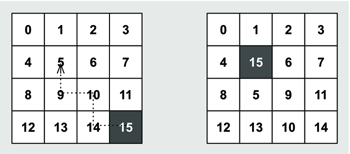
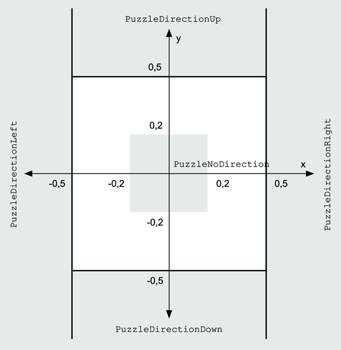
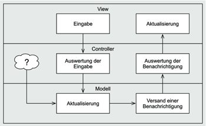
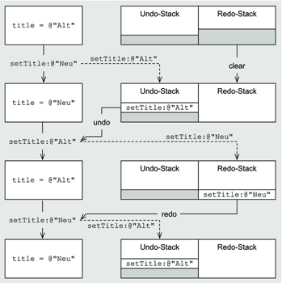
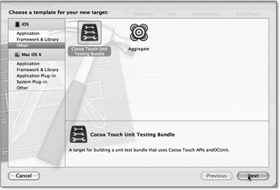
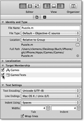

Zum Online-Shop
Zum Online-Shop»Ach, er will doch nur spielen.«
– Unbekannter Hundebesitzer
5 Animationen und Layer
Animationen sind ein wichtiger, aber leider häufig auch unterschätzter Bestandteil einer grafischen Benutzerschnittstelle. Durch Animationen können Sie die Aktionen der Applikation hervorheben und so dem Nutzer eine zusätzliche Rückmeldung geben.
Eine gute Animation hebt die Veränderungen auf dem Bildschirm hervor und verlängert den Wahrnehmungszeitraum für den Nutzer. Wenn Sie beispielsweise in der Tabellenansicht des Fototagebuchs einen Eintrag auswählen, dann schiebt der Navigation-Controller die Detailansicht auf den Bildschirm. Diese Animation hebt einerseits den View-Wechsel hervor. Sie erklärt andererseits auch den Zurück-Button in der Detailansicht: Sie sind durch eine Bewegung nach rechts in diese Ansicht gelangt. Also gelangen Sie mit dem Pfeil nach links wieder zurück.
Sie können aber Animationen nicht nur für den Wechsel kompletter Screens verwenden, sondern sie auch auf einzelne Views und deren Darstellungsschicht, den Layern, anwenden. In diesem Kapitel lernen Sie Layer und die verschiedenen Animationsmöglichkeiten von Cocoa Touch kennen.
Das Beispielprogramm Games dieses Kapitels enthält zwei einfache Spiele, an denen sich die Funktionsweise von Animationen besonders gut verdeutlichen lässt. Die Spiele kennen Sie wahrscheinlich. Das erste ist ein Schiebepuzzle, bei dem Sie Bildteile auf einer quadratischen Fläche so lange verschieben müssen, bis die Teile zu einem Gesamtbild verschmelzen. Bei dem zweiten Spiel handelt es sich um das bekannte Memory-Spiel.
Die Modelle der Spiele geben weitere Beispiele für die Implementierung eines Modells im Model-View-Controller-Muster. Das Modell des Fototagebuchs ist eher passiv. Seine Hauptaufgabe ist die Speicherung der Daten. Im Gegensatz dazu speichern die Modelle der Spiele nicht nur die Daten, sondern sie müssen den Controller bei Datenänderungen auch informieren.

5.1 Modell und Controller
Dieser Abschnitt soll die Modellschicht im Model-View-Controller-Muster von einer anderen Seite darstellen. Modelle, die auf Core-Data basieren, bilden in erster Linie größere Datenmengen gleichartiger Objekte ab. Die Konsistenz der Daten, also deren Gültigkeit, lässt sich durch relativ wenige und einfache Regeln beschreiben. Beispielsweise muss im Fototagebuch jedes Medium einen Tagebucheintrag haben.
5.1.1 iOS Next Topmodel
Die Modelle zu den Spielen in diesem Kapitel bestehen aus relativ wenigen Daten. Das Modell des Schiebepuzzles besteht beispielsweise nur aus einem Objekt. Andererseits muss es auch die Konsistenz der Spieledaten sicherstellen, und das ist komplizierter als bei vielen Core-Data-Datenmodellen. Das Modell des Schiebepuzzles stellt die Gültigkeit sicher, indem es nur erlaubte Operationen auf den Daten zulässt.
Die Klasse Puzzle im Projekt Games stellt das Modell des Schiebepuzzles dar. Sie verwendet dazu ein C-Array von NSUInteger-Werten. Dabei stellt jeder Wert ein Puzzleteil dar, während die Position eines Wertes im Array dessen Position im Spielfeld angibt.
Abbildung 5.1 Modell des Schiebepuzzles
Das linke Bild in Abbildung 5.1 stellt das gelöste Puzzle – die Ausgangsstellung – dar. Jeder Wert befindet sich dabei an der Position mit dem gleichen Index – also Wert 0 an Position 0 und so weiter. Der Wert 15 repräsentiert das leere Feld. Wenn Sie die Steine entlang des Pfeiles jeweils auf das leere Feld schieben, erhalten Sie die Puzzledarstellung des rechten Bildes. Die Werte haben also im Array des Modellobjekts die folgende Anordnung: [0, 1, 2, 3, 4, 15, 6, 7, 8, 5, 9, 11, 12, 13, 10, 14].
Um die Konsistenz des Puzzlemodells sicherzustellen, liegen ihm folgende Regeln zugrunde:
- Ein neues Puzzle hat immer die Ausgangsstellung.
- Alle Methoden, die die Anordnung der Teile verändern,
basieren auf erlaubten Spielzügen. - Alle anderen Methoden lesen die Daten nur aus oder
basieren auf Methoden der zweiten Regel.
Das Puzzle besitzt eine private Property items, die das Array mit den Werten enthält. Die Länge des Arrays speichert das Modell in der Property size. Die erste Regel lässt sich sehr einfach herstellen. Wenn die Klasse das Array anlegt, setzt sie alle Einträge entsprechend:
NSUInteger theSize = self.size;
for(NSUInteger i = 0; i < theSize; ++i) {
self.items[i] = i;
}
self.freeIndex = theSize – 1;
Listing 5.1 Initialisierung des Arrays des Modells
Im Beispielprogramm finden Sie diese Schleife in der internen Methode clear des Puzzlemodells. Das Puzzle merkt sich in der Property freeIndex den Index des freien Feldes im Array.
Die Puzzle-Klasse besitzt zwei Methoden, mit denen Sie die Anordnung der Puzzleteile verändern können. Die beiden Methoden bilden die Steuerungsmöglichkeiten des Spiels ab. Sie können das iPhone in vier Richtungen kippen, um die Teile zu bewegen. Diese Steuerungsmöglichkeit implementiert die Methode tiltToDirection:. Sie können außerdem einen Stein berühren und ihn auf das freie Feld ziehen, was die Methode moveItemAtIndex:toDirection: abbildet.
Für die Richtungen verwendet das Modell einen eigenen Aufzählungstyp PuzzleDirection. Abbildung 5.2 stellt die möglichen Spielzüge des Feldes mit dem Index 6 dar. Das freie Feld befindet sich dabei jeweils in dem Feld, auf das der Pfeil zeigt. Wenn Sie beispielsweise das Puzzle nach oben kippen, dann muss das freie Feld den Index 2 haben. Oder andersherum: Wenn Sie das Puzzle nach oben kippen und der Index des freien Feldes ist 2, dann muss die Methode tiltToDirection: Feld 2 und Feld 6 vertauschen. Daraus können Sie die Regeln für das Kippen herleiten:
| Kipprichtung | Index des Feldes für den Tausch |
| Links | freeIndex + 1 |
| Rechts | freeIndex – 1 |
| Oben | freeIndex + 4 |
| Unten | freeIndex – 4 |
Abbildung 5.2 Spielzüge im Puzzle
Es gibt aber auch ungültige Züge. Angenommen, das freie Feld befindet sich an Position 12 und Sie kippen das Puzzle nach rechts. Nach den Regeln aus Tabelle 5.1 müssten Sie dann die Felder 11 und 12 miteinander vertauschen (gestrichelter Pfeil in Abbildung 5.2). Das ist aber natürlich kein gültiger Zug, weil der Stein dabei die Zeile und Spalte auf einmal wechselt. Bei einem gültigen Zug müssen also die Indizes des freien Feldes und des Tauschfeldes entweder in der gleichen Zeile oder in der gleichen Spalte liegen.
Den Zeilen- oder Spaltenindex zu einem Feldindex können Sie über eine Division mit Rest mit 4 als Teiler ermitteln. Dazu ein paar Beispiele: Wenn Sie 13 durch 4 mit Rest teilen, erhalten Sie 13 = 3 * 4 + 1 also 3 mit Rest 1 als Ergebnis, und 5 = 1 * 4 + 1 ist 1 mit Rest 1. Da der Divisionsrest bei beiden Rechnungen gleich ist, liegen beide Werte in der gleichen Spalte. Hingegen ist 15 = 3 * 4 + 3 also 3 Rest 3. Die Divisionsreste von 13 und 15 sind zwar unterschiedlich, aber bei beiden Werten ist der Quotient 3. Also liegen diese Zahlen in der gleichen Zeile. Wenn Sie das nicht glauben, dann schauen Sie doch in Abbildung 5.2.
Außerdem kann es bei der Anwendung der Regeln aus Tabelle 5.1 passieren, dass der berechnete Index nicht zwischen 0 und 15 liegt. Da das Modell für Indexwerte vorzeichenlose Zahlen vom Typ NSUInteger verwendet, können bei einer Subtraktion aber keine negativen Zahlen entstehen. Stattdessen findet ein Überlauf statt – mit einer sehr großen Zahl als Ergebnis. Wenn die Applikation beispielsweise 4 von 3 abzieht, ist das Ergebnis 4294967295. Die Gültigkeit eines Kippzuges des Puzzles können Sie also durch folgende Bedingung überprüfen:
theIndex < self.size && (
(self.freeIndex / self.length) == (theIndex / self.length) ||
(self.freeIndex % self.length) == (theIndex % self.length))
Listing 5.2 Gültigkeitsprüfung eines Zuges
Dabei enthält theIndex die Position des Feldes für die Vertauschung mit dem leeren Feld. Der Ausdruck self.length liefert die Breite beziehungsweise Höhe des Puzzles – also 4. Wenn die Bedingung aus Listing 5.2 wahr ist, vertauscht die Methode tiltToDirection: die Werte in den Feldern mit den Indizes freeIndex und theIndex.
Die Logik der Methode moveItemAtIndex:toDirection: ist verglichen mit tiltToDirection: wesentlich einfacher. Der Indexparameter gibt das Feld für die Vertauschung mit dem leeren Feld an. Sie brauchen also nur zu prüfen, ob das leere Feld in der angegebenen Richtung vom angegebenen Feld liegt. Dazu berechnet die Methode den Index des Feldes in der angegebenen Richtung analog zur Methode tiltToDirection:. Wenn dieser Wert mit dem angegebenen Index übereinstimmt, vertauscht die Methode die beiden Felder.
Das Modell speichert neben den Positionen der Puzzleteile auch die Anzahl der durchgeführten Züge. Dazu stellt die Klasse die nur-lesbare Property moveCount zur Verfügung. Mit der Methode shuffle können Sie das Puzzle durchschütteln. Sie ermittelt mehrmals eine Pseudozufallszahl und schiebt das freie Feld durch mehrfache Aufrufe der Methode tiltToDirection: auf das Feld mit diesem Index.
5.1.2 View an Controller
Das Puzzlespiel bietet zwei Möglichkeiten, die Steine zu verschieben. Zum einen können Sie die Steine per Finger verschieben. Das realisiert die App über vier Gesturerecognizer, die die Methode viewDidLoad mit der Hilfsmethode addSwipeGestureRecognizerWithDirection:action: erzeugt:
- (void)addSwipeGestureRecognizerWithDirection:
(UISwipeGestureRecognizerDirection)inDirection
action:(SEL)inAction {
UISwipeGestureRecognizer *theRecognizer =
[[UISwipeGestureRecognizer alloc] initWithTarget:self
action:inAction];
theRecognizer.direction = inDirection;
[self.puzzleView addGestureRecognizer:theRecognizer];
[theRecognizer release];
}
- (void)viewDidLoad {
[super viewDidLoad];
...
[self addSwipeGestureRecognizerWithDirection:
UISwipeGestureRecognizerDirectionLeft
action:@selector(handleLeftSwipe:)];
[self addSwipeGestureRecognizerWithDirection:
UISwipeGestureRecognizerDirectionRight
action:@selector(handleRightSwipe:)];
[self addSwipeGestureRecognizerWithDirection:
UISwipeGestureRecognizerDirectionUp
action:@selector(handleUpSwipe:)];
[self addSwipeGestureRecognizerWithDirection:
UISwipeGestureRecognizerDirectionDown
action:@selector(handleDownSwipe:)];
[self clear];
}
Listing 5.3 Erzeugung und Initialisierung der Swipe-Gesturerecognizer
In Xcode 4.2 können Sie die Gesturerecognizer natürlich auch über den Interface Builder anlegen und zu dem Puzzleview hinzufügen. Die Auswertung der Swipe-Gesten erfolgt über jeweils eine Methode pro Richtung und eine Hilfsmethode:
- (void)handleGestureRecognizer:
(UIGestureRecognizer *)inRecognizer
withDirection:(PuzzleDirection)inDirection {
UIView *thePuzzleView = self.puzzleView;
Puzzle *thePuzzle = self.puzzle;
CGPoint thePoint =
[inRecognizer locationInView:thePuzzleView];
NSUInteger theLength = thePuzzle.length;
CGSize theViewSize = thePuzzleView.frame.size;
NSUInteger theRow =
thePoint.y * theLength / theViewSize.height;
NSUInteger theColumn =
thePoint.x * theLength / theViewSize.width;
NSUInteger theIndex = theRow * theLength + theColumn;
[thePuzzle moveItemAtIndex:theIndex toDirection:inDirection];
}
- (void)handleLeftSwipe:(UISwipeGestureRecognizer *)inRecognizer {
[self handleGestureRecognizer:inRecognizer
withDirection:PuzzleDirectionLeft];
}
- (void)handleRightSwipe:(UISwipeGestureRecognizer *)inRecognizer {
[self handleGestureRecognizer:inRecognizer
withDirection:PuzzleDirectionRight];
}
- (void)handleUpSwipe:(UISwipeGestureRecognizer *)inRecognizer {
[self handleGestureRecognizer:inRecognizer
withDirection:PuzzleDirectionUp];
}
- (void)handleDownSwipe:(UISwipeGestureRecognizer *)inRecognizer {
[self handleGestureRecognizer:inRecognizer
withDirection:PuzzleDirectionDown];
}
Listing 5.4 Auswertung der Swipe-Gesten
Die Methode handleGestureRecognizer:withDirection: bestimmt zunächst aus der Position den Index des Feldes. Mit der übergebenen Richtung ruft sie dann die Methode moveItemAtIndex:toDirection: auf.
Sie können aber auch die Puzzlesteine über Kippbewegungen des Gerätes verschieben. Dafür verwendet die App den Beschleunigungssensor des Gerätes, auf den Sie über das Singleton UIAccelerometer zugreifen können. Dazu müssen Sie in dem Singleton ein Delegate übergeben. Das geschieht in der Methode viewDidAppear:, und die Methode viewWillDisappear: setzt es wieder auf nil. Das hat zwei Gründe. Zum einen können mit diesem Vorgehen auch andere View-Controller den Bewegungssensor nutzen, denn es kann sich ja immer nur der gerade angezeigte Controller als Delegate setzen. Zum anderen darf der ausgeblendete View-Controller auch keine Werte empfangen. Ansonsten würde ja der Controller fröhlich weiter Änderungen an das Modell senden, wenn Sie das iPhone bewegen.
- (void)viewDidAppear:(BOOL)inAnimated {
[super viewDidAppear:inAnimated];
UIAccelerometer *theAccelerometer =
[UIAccelerometer sharedAccelerometer];
theAccelerometer.delegate = self;
theAccelerometer.updateInterval = 0.05;
}
- (void)viewWillDisappear:(BOOL)inAnimated {
UIAccelerometer *theAccelerometer =
[UIAccelerometer sharedAccelerometer];
theAccelerometer.delegate = nil;
[super viewWillDisappear:inAnimated];
}
Listing 5.5 An- und Abmeldung des Delegates beim Accelerometer
Der Beschleunigungssensor liefert die Werte in einem Objekt der Klasse UIAcceleration an die Delegatemethode. Dieses Objekt enthält die g-Werte entlang der drei Hauptachsen x, y und z (siehe Abbildung 5.3). Die Werte für diese Achsen geben dabei deren Ausrichtung zur Erdmitte an. Wenn das iPhone mit dem Display nach oben horizontal auf dem Tisch liegt, liefert der Sensor im Idealfall die Werte x = 0, y = 0 und z = –1. Halten Sie hingegen das Telefon genau senkrecht, um ein Foto zu schießen, dann erhalten Sie die Werte x = 0, y = –1, z = 0. Es hat also immer diejenige Achse einen Wert von +/–1, die nach unten zeigt, wobei das Vorzeichen dem Vorzeichen an der Achsenbeschriftung entspricht.
| Do it yourself |
|
Apple stellt das Beispielprogramm AccelerometerGraph mit der Dokumentation zur Verfügung. Damit können Sie sich die Werte des Beschleunigungssensors auf Ihrem iPhone anzeigen lassen. Dieses Programm ist sehr praktisch, wenn Sie eigene Programme mit Beschleunigungssensorunterstützung entwickeln wollen. Um es in Xcode zu öffnen, rufen Sie die Hilfe über den Menüpunkt Help · Documentation and API Reference oder + + (beziehungsweise + + + auf einer deutschen Tastatur) auf und geben in das Suchfeld »AccelerometerGraph« ein. Das Projekt finden Sie dann unter der Rubrik Sample Code in der Ergebnisliste. Alternativ können Sie das Projekt auch über die URL http://developer.apple.com/library/ios/samplecode/AccelerometerGraph/ öffnen. Diese App ist allerdings nur auf einem iOS-Gerät sinnvoll, da der Simulator keinen Beschleunigungssensor besitzt und diesen auch nicht nachahmen kann. |
Abbildung 5.3 Die Achsen eines Acceleration-Objekts
Um die Messwerte des Beschleunigungssensors empfangen und auswerten zu können, muss das Delegate die Methode accelerometer:didAccelerate: implementieren.
Das Puzzle soll die Kippbewegungen folgendermaßen auswerten. Wenn Sie das Gerät aus der horizontalen Lage in eine Richtung kippen, soll die App den passenden Stein auf das freie Feld schieben. Danach müssen Sie das Gerät erst wieder in die Ausgangslage bringen, um den nächsten Stein verschieben zu können. Um das zu verwirklichen, merkt sich der Controller die letzte Kipprichtung in der privaten Property lastDirection. Neben den vier Richtungen für oben, unten, links und rechts gibt es noch einen Wert für keine Richtung. Nur wenn die letzte Kipprichtung diesen Wert hat, führt der Controller einen Spielzug aus.
- (void)accelerometer:(UIAccelerometer *)inAccelerometer
didAccelerate:(UIAcceleration *)inAcceleration {
float theX = inAcceleration.x;
float theY = inAcceleration.y;
if(self.lastDirection == PuzzleNoDirection) {
Puzzle *thePuzzle = self.puzzle;
if(fabs(theX) > kHorizontalMaximalThreshold) {
self.lastDirection = theX < 0 ?
PuzzleDirectionLeft : PuzzleDirectionRight;
}
else if(fabs(theY) > kVerticalMaximalThreshold) {
self.lastDirection = theY < 0 ?
PuzzleDirectionDown : PuzzleDirectionUp;
}
[thePuzzle tiltToDirection:self.lastDirection];
}
else if(fabs(theX) < kHorizontalMinimalThreshold &&
fabs(theY) < kVerticalMinimalThreshold) {
self.lastDirection = PuzzleNoDirection;
}
}
Listing 5.6 Auswertung der Beschleunigungssensorwerte
Für die Auswertung sind nur die x- und y-Werte interessant. Sie lassen sich direkt in Links/rechts- beziehungsweise Unten/oben-Bewegungen übersetzen. Diese Auswertung veranschaulicht Abbildung 5.4. Wenn der x- und der y-Wert im grauen Quadrat liegen und somit das Gerät nicht weit genug gekippt wurde, dann setzt die Methode den Propertywert lastDirection auf PuzzleNoDirection. Die Methode setzt den Propertywert jeweils auf die Konstante, in deren Bereich sich der x- und der y-Wert befindet. Außerdem sendet sie diese Richtung natürlich auch als Kippbewegung an das Puzzle. Nur bei dem Bereich um das graue Quadrat verändert die Methode den Propertywert nicht.
Abbildung 5.4 Auswertungsbereiche für Beschleunigungswerte
5.1.3 Modell an Controller
Der Controller übersetzt also alle Eingaben der Gesturerecognizer und des Beschleunigungssensors in Methodenaufrufe des Modells. Er muss aber nicht nur das Modell, sondern auch den View aktualisieren. Es wäre naheliegend, wenn Sie dazu in den Controller entsprechende Methodenaufrufe für den View einfügten. Dieses Vorgehen würde aber zu Methoden mit einem sehr ähnlichen Aufbau führen. Der erste Schritt aktualisiert das Modell und der zweite den View, was aber einige Nachteile hat:
- Durch den ähnlichen Aufbau entsteht die Gefahr von Code-Doppelungen.
- Sie können komplexere Veränderungen des Modells unter Umständen nur sehr schlecht über dieses Vorgehen abbilden. Die Methode shuffle führt beispielsweise sehr viele Vertauschungsoperationen durch.
- Wenn nicht nur ein, sondern mehrere Controller das Modell verändern können, können Modellinhalt und Viewdarstellung voneinander differieren.
Diese Probleme lassen sich vermeiden, wenn das Modell den View automatisch über die Veränderungen benachrichtigt. Das Modell darf aber auf keinen Fall eine Abhängigkeit zum Controller oder View haben, weswegen Sie vom Modell nicht einfach auf diese Schichten zugreifen können. Außerdem sollte ja das Modell beliebig viele Controller und Views über Zustandsänderungen informieren können.
Stattdessen kann auch das Modell bei jeder Veränderung entsprechende Benachrichtigungen versenden, die in Kapitel 4 vorgestellt wurden. Die vom Modellzustand abhängigen Controller lauschen auf diese Benachrichtigungen und aktualisieren sich und den View entsprechend.
Das Modell des Schiebepuzzles versendet zwei Benachrichtigungen mit jeweils gleich aufgebautem Info-Dictionary. Die Methode tiltToDirection: versendet die Benachrichtigung kPuzzleDidTiltNotification, während moveItemAtIndex:toDirection: die Benachrichtigung kPuzzleDidModeNotification versendet. Das Directory userInfo in der Benachrichtigung enthält dabei die folgenden Schlüssel:
| Schlüssel | Wert |
| kPuzzleDirectionKey | Die Bewegungsrichtung des Puzzleteils |
| kPuzzleFromIndexKey | Der ursprüngliche Index des Puzzleteils |
| kPuzzleToIndexKey | Der neue Index des Puzzleteils |
Die Werte in der Tabelle haben alle den Typ NSUInteger. Sie müssen diese Werte in NSNumber-Objekten kapseln, um sie in einem NSDictionary verwenden zu können.
Abbildung 5.5 stellt das Vorgehen zur Aktualisierung des Views grafisch dar. Wenn der Nutzer eine Eingabe macht, läuft die Verarbeitung vom View über den Controller ins Modell. Das Modell schickt dann eine Benachrichtigung, die genau den umgekehrten Weg nimmt. Dieses Vorgehen erinnert ein bisschen an das Spielen über Bande beim Billard und wirkt umständlich. Der Vorteil dabei ist, dass der View keine Änderung des Modells verpassen kann. Wenn beispielsweise ein anderer Controller – symbolisiert durch das Fragezeichen – das Modell verändert, benachrichtigt es immer den View. Der View passt sich also immer dem Modell an.
Abbildung 5.5 Aktualisierung des Views über Modellaktualisierungen
Das Modell speichert außerdem die Anzahl der Züge. Auch hier soll die Anzeige des Spielstands automatisch bei einer Änderung erfolgen. Das Modell könnte hierzu auch Benachrichtigungen verwenden. Da es hierbei aber um die Beobachtung eines einzelnen Wertes geht, ist hierfür Key-Value-Observing (KVO) besser geeignet.
Key-Value-Observing hat gegenüber Benachrichtigungen den Vorteil, dass Sie dafür nichts am Modell ändern müssen. Die Möglichkeit, Werte eines Objekts zu beobachten, ist bei den beobachteten Objekten in Cocoa sozusagen schon eingebaut. Sie brauchen nur noch den Beobachter einzurichten. Das machen Sie über die Methode addObserver:forKeyPath:options:context:.
Der PuzzleViewController registriert sich beim Puzzlemodell als Beobachter für die Property moveCount über den folgenden Aufruf:
[self.puzzle addObserver:self
forKeyPath:@"moveCount"
options:0
context:nil];
Listing 5.7 Registrierung als Beobachter
Bei jeder Änderung der Property moveCount ruft dann Cocoa automatisch die Methode observeValueForKeyPath:ofObject:change:context: des Beobachters auf. Dabei enthalten die ersten beiden Parameter den Namen der beobachteten Eigenschaft (hier moveCount) beziehungsweise das beobachtete Objekt (also das Puzzle). Der Parameter change enthält ein Dictionary mit verschiedenen Werten der Property. Sie können darüber beispielsweise den Wert vor der Änderung ermitteln. Dazu müssen Sie allerdings bei der Registrierung im Parameter options allerdings den Wert NSKeyValueObservingOptionOld angeben. Das Dictionary enthält diesen Wert dann unter dem Schlüssel NSKeyValueChangeOldKey.
5.1.4 Undo und Redo
Beim Lösen eines Puzzles machen Sie sicherlich den ein oder anderen Zug, den Sie am liebsten sofort wieder zurücknehmen möchten. Sie können natürlich das zuletzt bewegte Teil wieder zurückschieben. Allerdings erhöht das Modell für diese Rücknahme auch den Zugzähler. Das Puzzle soll aber in dieser Situation auch ein Auge zudrücken können und dem Nutzer die Rücknahme seines letzten Zuges erlauben. Das Puzzle ist in dieser Hinsicht sogar sehr großzügig. Sie können beliebig viele Züge zurücknehmen.
Das Foundation-Framework stellt für diesen Zweck die Klasse NSUndoManager bereit, mit der Sie eine Undo- und Redo-Verwaltung implementieren können. Sie müssen dazu bei jedem Spielzug einen Methodenaufruf registrieren, der diesen Spielzug zurücknimmt.
Für die Registrierung von Undo-Operationen stellt der Undo-Manager zwei Methoden zur Verfügung. Wenn Sie eine Methode mit nur einem Parameter registrieren möchten, können Sie dazu die Methode registerUndoWithTarget: selector:object: verwenden. Sie erhält den Empfänger, den Selektor und das Parameterobjekt als Parameter. Die registrierten Methodenaufrufe verwaltet der Undo-Manager intern über einen Stapel (Last-In-First-Out oder kurz LIFO) oder auch Undo-Stack. Beispielsweise können Sie damit folgendermaßen die Undo-Operation für einen Setteraufruf registrieren:
- (void)setTitle:(NSString *)inTitle {
if(title != inTitle) {
[self.undoManager registerUndoWithTarget:self selector:@selector(setTitle:) object:title];
[title release];
title = [inTitle retain];
}
}
Listing 5.8 Setter mit Undo-Manager
Der Setter registriert im Undo-Manager einen Setter-Aufruf mit dem alten Property-Wert. Sie können den Manager durch einen Aufruf der Methode undo dazu veranlassen, die zuletzt registrierte Undo-Operation auszuführen. Wenn das der Setter aus Listing 5.8 war, dann ruft der Undo-Manager erneut diesen Setter auf. Hierbei übergibt er aber den alten Wert, sodass das Objekt wieder den Titel vor dem ersten Setter-Aufruf hat.
Zu dem Zeitpunkt, an dem der Setter die Undo-Operation aufruft, registriert er einen neuen Methodenaufruf. Dadurch kommt der Undo-Stack durcheinander! Aus dieser Not hat Apple eine Tugend gemacht. Während der Ausführung von Undo-Operationen zeichnet der Undo-Manager alle Methodenregistrierungen als Redo-Operationen auf. Eine Redo-Operation macht eine Undo-Anweisung rückgängig, und Sie können sie durch die Methode redo im Undo-Manager ausführen. Der Undo-Manager verwaltet die Redo-Operationen über einen eigenen Stapel – dem Redo-Stack.
In Abbildung 5.6 ist die Interaktion des Setters aus Listing 5.8 mit dem Undo-Manager abgebildet. Der dargestellte Ablauf entspricht dabei den folgenden Programmanweisungen:
[theObject setTitle:@"Neu"];
[theObject.undoManager undo];
[theObject.undoManager redo];
Listing 5.9 Programmablauf zu Abbildung 5.6
Die gestrichelten Pfeile in der Abbildung stellen die Registrierung der Undo- und Redo-Operationen dar. Die durchgezogenen Pfeile sind mit der aufgerufenen Methode des Undo-Managers beschriftet und zeigen die Herkunft des ausgeführten Methodenaufrufs an.
Abbildung 5.6 Interaktion des Setters mit dem Undo-Manager
Um nun den Undo-Manager in das Puzzlemodell zu integrieren, muss jede Kippoperation die Kippoperation in die entsprechende Gegenrichtung beim Undo-Manager registrieren. Allerdings erhöht die Methode tiltToDirection: den Zugzähler immer um eins. Sie brauchen also eine Methode, die wie tiltToDirection: die Puzzleteile verschiebt, aber den Zugzähler um eins verringert. Aber anstatt die Methode zu kopieren und abzuändern, verwendet das Puzzle die interne Hilfsmethode tiltToDirection:withCountOffset:. Den Wert des zweiten Parameters addiert die Methode zu dem Zugzähler. Sie können also hier den Wert 1 bei normalen Spielzügen und –1 bei Undo-Operationen angeben.
Diese Methode können Sie aber nicht über die Methode registerUndoWithTarget:selector:object: beim Undo-Manager registrieren. Sie hat erstens zwei Parameter, und das sind zweitens auch noch einfache Datentypen. Es gibt aber noch eine weitere Möglichkeit, um Undo-Methoden zu registrieren. Wenn Sie jetzt denken, dass Sie das Invocation-Objekt selber bauen müssen, dann sind Sie aber auf dem Holzweg. Der Undo-Manager stellt die Methode prepareWithInvocationTarget: zur Verfügung. Sie müssen diese Methode mit dem Methodenempfänger aufrufen und an das Ergebnis den Methodenaufruf für die Undo-Operation senden. Sie können damit die Registrierung aus Listing 5.8 so schreiben:
[[self.undoManager prepareWithInvocationTarget:self] setTitle:title];
Listing 5.10 Alternative Registrierungsmöglichkeit einer Undo-Operation
Auch dieser Code führt nicht die Methode setTitle: aus. Was auf den ersten Blick wie Zauberei aussieht, ist bei genauerem Hinsehen aber nur ein geschickter Trick – wie das bei Magiern ja auch meistens der Fall ist.
Des Rätsels Lösung liegt in der Antwort auf die Frage, was passiert, wenn ein Objekt eine ihm unbekannte Methode empfängt. Das Laufzeitsystem ruft in diesem Fall die Methode forwardInvocation: des Objekts auf. Sie bekommt ein Invocationobjekt für den fehlerhaften Methodenaufruf als Parameter übergeben.
Der Undo-Manager nutzt diesen Umstand aus. In der Methode prepareWithInvocationTarget: merkt er sich einfach das Target-Objekt und gibt sich selbst zurück. Außerdem überschreibt er forwardInvocation:. Darin ersetzt er im Invocation-Object das Invocation-Target und legt das Objekt auf den Undo- beziehungsweise Redo-Stack. Das Ganze klingt sehr kompliziert, ist aber recht einfach:
- (id)prepareWithInvocationTarget:(id)inTarget {
self.preparedTarget = inTarget;
return self;
}
- (void)forwardInvocation:(NSInvocation *)inoutInvocation {
[inoutInvocation setTarget:self.preparedTarget];
self.preparedTarget = nil;
// inoutInvoction auf Undo- oder Redo-Stack
}
Listing 5.11 Invocation-Erzeugung über Proxy-Aufruf
| Proxys |
|
Dieses Vorgehen basiert auf dem Proxymuster. Ein Proxy ist ein Objekt, das ein anderes Objekt kapselt und dessen Methodenaufrufe entgegennimmt. Der Proxy ist dabei für den Methodenaufrufer vollkommen transparent. Durch das Proxyobjekt besteht die Möglichkeit, die Methodenaufrufe zu modifizieren. Im Fall des Undo-Managers ist das die Speicherung der Methodenaufrufe. |
|
Vielleicht kennen Sie ja den Begriff Proxy von den Netzwerkeinstellungen in Mac OS X oder von Ihrem Internetbrowser. Dort können Sie Ihre Webseitenaufrufe durch einen Proxyserver leiten. Der Proxyserver speichert die aufgerufenen Seiten, um den Traffic zu mindern und die Seitenaufrufe zu beschleunigen.[22](Meistens machen die Web-Proxys im Gegensatz zum Entwurfsmuster aber einfach auch nur viel Ärger.) Das ist das gleiche Prinzip wie bei dem Entwurfsmuster. |
Mit der Methode tiltToDirection:withCountOffset: können Sie jetzt die vollständige Undo- und Redo-Funktionalität des Puzzles implementieren. Dabei erfolgt die Registrierung der Undo-Operation folgendermaßen:
Puzzle *thePuzzle = [self.undoManager
prepareWithInvocationTarget:self];
...
[thePuzzle tiltToDirection:theReverseDirection
withCountOffset:-inOffset];
Listing 5.12 Registrierung der Undo-Operation im Puzzle
Durch das Negieren des Offsets verhält sich die Methode nicht nur bei Undo-, sondern auch bei Redo-Aufrufen richtig. Denn Letzteres muss ja den Zugzähler wieder erhöhen.
5.1.5 Unittests
Sie haben jetzt für das Puzzle ein Modell, das auf theoretischen Überlegungen zu dem Spiel beruht. Aber macht es denn auch das, was es soll? Normalerweise testen Sie während der Programmerstellung komplette Funktionen Ihrer App. Sie kippen beispielsweise das iPhone und überprüfen, ob die Puzzle-App auch das richtige Teil verschiebt. Diese Funktionstests sind sehr wichtig, und Sie kommen nicht um sie herum.
| Funktionstests |
|
Sie sollten Ihre App vor der Veröffentlichung von mehreren anderen Nutzern testen lassen. Tester finden häufig die erstaunlichsten Fehler in den Apps. Optimalerweise lassen Sie Ihre App nicht nur von verschiedenen Personen, sondern auch auf verschiedenen Geräten überprüfen. |
Es ist bei komplexen Programmen inzwischen üblich, automatisierte Testverfahren zu erstellen und regelmäßige Testläufe durchzuführen. Mit Xcode 4 hat Apple die Erstellung und Ausführung von Modul- oder auch Unittests erheblich vereinfacht. Wenn Sie ein neues Projekt anlegen, brauchen Sie nur die Checkbox Include Unit Tests anzuklicken. Xcode legt dann ein weiteres Target für die Tests in dem neuen Projekt an. Dieses Target enthält eine Klasse, in die Sie Ihre Testmethoden schreiben können.
Sie können das Target für die Tests aber auch noch später erstellen oder in Ihrem Programm auch mehrere Testtargets anlegen. Wählen Sie dazu den Menüpunkt File · New Target... aus. Es erscheint der in Abbildung 5.7 dargestellte Dialog. Selektieren Sie dort in der linken Spalte unter iOS den Punkt Other und dann in der Übersicht das Template Cocoa Touch Unit Testing Bundle.
Abbildung 5.7 Anlegen eines neuen Targets
Wenn Sie auf den Button Next des Dialogs klicken, erscheint der in Abbildung 5.8 dargestellte Dialog. Dort können Sie den Namen und weitere Optionen des neuen Targets festlegen. Nachdem Sie auf den Buttons Finish geklickt haben, enthält das Projekt eine neue Gruppe mit dem Namen des Targets. In der Gruppe finden Sie eine Klasse, die ebenfalls den Namen des Targets hat und die Oberklasse SenTestCase besitzt.
Die Klasse enthält bereits die drei Methoden:
- Das Testframework ruft Methode setUp jeweils vor der Ausführung jeder Testmethode auf. Sie sollten innerhalb von setUp durch [super setUp]; immer als Erstes die Methode in der Oberklasse aufrufen. Danach können Sie Ihre Testklasse für den Test initialisieren.
- Die Methode tearDown ruft das Testframework nach der Ausführung einer Testmethode auf. Sie sollte immer als letzte Anweisung [super tearDown]; enthalten. In dieser Methode können Sie die Ressourcen Ihrer Testklasse wieder freigeben.
- Alle Testmethoden beginnen mit dem Präfix test und haben keine Parameter. Die Methode testExample ist ein Beispiel für eine Testmethode.
Abbildung 5.8 Eingabe der Target-Optionen
Sie können in eine Testmethode beliebigen, lauffähigen Code hineinschreiben. Sie müssen aber alle Klassen Ihres Programms, die Sie testen wollen, zu diesem neuen Target hinzufügen. Dazu brauchen Sie im Dateiinspektor unter der Rubrik Target Membership einfach nur das entsprechende Target anzuklicken (siehe Abbildung 5.9). Das Gleiche gilt natürlich auch für die verwendeten Frameworks.
Zusätzlich stellt das SenTestKit-Framework, auf dem die Testumgebung basiert, noch Makros bereit, um die Anweisungen zu testen. Sie können mit dem Makro STAssertTrue(Bedingung, Fehlermeldung, ...) prüfen, ob die angegebene Bedingung wahr ist. Falls sie falsch ist, gibt das Makro die Fehlermeldung aus. In der Meldung können Sie die üblichen Platzhalter verwenden, die Sie auch von stringWithFormat: kennen. Falls Sie stattdessen erwarten, dass die Bedingung falsch ist, können Sie STAssertFalse(Bedingung, Fehlermeldung, ...) verwenden.
Das Testprojekt nutzt die Unittests, um die Modellklassen zu prüfen. Als Grundlage der Tests dient das logische Modell der Puzzleklasse. Der erste Test überprüft die Konstruktion eines neuen Puzzlemodells. Wenn Sie ein neues Modell erzeugen, soll es die Ausgangsstellung haben. Damit die Testklasse das Modell nach den Tests immer freigeben kann, besitzt sie eine Property puzzle, die das Modell der Tests enthält.
Abbildung 5.9 Datei zum Target mit den Unittests hinzufügen
Die Testmethode in Listing 5.13 überprüft zunächst, ob das Puzzle die richtige Länge und die richtige Größe besitzt. Das Puzzle befindet sich in der Ausgangsstellung, wenn sich jedes Puzzleteil an der Position befindet, die seinem Wert entspricht.
- (void)testCreation {
self.puzzle = [Puzzle puzzleWithLength:4];
STAssertTrue(self.puzzle.length == 4, @"invalid length = %d", self.puzzle.length);
STAssertTrue(self.puzzle.size == 16, @"invalid size = %d", self.puzzle.size);
for(NSUInteger i = 0; i < self.puzzle.size; ++i) {
NSUInteger theValue = [self.puzzle valueAtIndex:i];
STAssertTrue(theValue == i,
@"invalid value %d at index %d", theValue, i);
}
}
Listing 5.13 Unittest für die Ausgangsstellung des Puzzles
Xcode zeigt die nicht erfüllten Testbedingungen nach der Ausführung der Testmethode als rote Fehlermeldungen im Quelltext an. Die Testmethode testCreation ist sehr sinnvoll. Sie können jetzt immer davon ausgehen, dass ein neues Puzzle sich in der Ausgangsposition befindet. Das ist eine gute Basis für weitere Testmethoden.
Abbildung 5.1 enthält ein Beispiel für die Veränderung des Puzzlemodells durch eine Zugfolge aus der Ausgangsstellung. Ein Puzzle in Ausgangsstellung, das Sie nach rechts, unten, rechts und wieder nach unten kippen, hat ein Array mit der Anordnung: [0, 1, 2, 3, 4, 15, 6, 7, 8, 5, 9, 11, 12, 13, 10, 14]. Das lässt sich wunderbar in einer Testmethode umsetzen.
- (void)testComplexMove {
static NSUInteger theValues[] = {
0, 1, 2, 3, 4, 15, 6, 7, 8, 5, 9, 11, 12, 13, 10, 14 };
self.puzzle = [Puzzle puzzleWithLength:4];
STAssertTrue([self.puzzle
tiltToDirection:PuzzleDirectionRight],
@"Can't tilt right.");
STAssertTrue([self.puzzle
tiltToDirection:PuzzleDirectionDown],
@"Can't tilt down.");
STAssertTrue([self.puzzle
tiltToDirection:PuzzleDirectionRight],
@"Can't tilt right.");
STAssertTrue([self.puzzle
tiltToDirection:PuzzleDirectionDown],
@"Can't tilt down.");
STAssertTrue(self.puzzle.freeIndex == 5,
@"invalid free index: %u", self.puzzle.freeIndex);
for(NSUInteger i = 0; i < self.puzzle.size; ++i) {
NSUInteger theValue = [self.puzzle valueAtIndex:i];
STAssertTrue(theValue == theValues[i],
@"invalid value %d (%d) at index %d",
theValue, theValues[i], i);
}
}
Listing 5.14 Testmethode zu Abbildung 5.1
Die Testmethode in Listing 5.14 führt zunächst die vier Kippzüge aus. Dabei prüft sie auch, ob das Modell auch jeden Zug erfolgreich ausgeführt hat. Danach vergleicht die Methode die Anordnung der Teile im Modell (Ist-Wert) mit den Soll-Werten des Arrays theValues.
| Aus Fehlern lernen |
|
Ihr Programm hat einen Fehler? Wenn Sie die Fehlersituation in einem Testfall nachbilden, haben Sie eine gute Möglichkeit, den Fehler einfacher und schneller zu analysieren. Sie können ihn mit der Testmethode sozusagen unter Laborbedingungen untersuchen. Die Testbedingungen müssen natürlich das richtige Verhalten des Programms prüfen. Außerdem können Sie mithilfe der Testmethode prüfen, ob Sie den Fehler aus Ihrem Code eliminiert haben. Denn Ihre Testmethode zeigt so lange Fehler an, bis Ihr Code richtig funktioniert. |
Die beschriebenen Tests gehen davon aus, dass der Nutzer nur gültige Züge macht. Das sieht in der Praxis aber meistens anders aus. Auch diesen Fall sollten Sie in den Testfällen berücksichtigen. Beispielsweise darf das Kippen eines Puzzles in der Ausgangsstellung nach links das Puzzle nicht verändern. In diesem Fall muss die Methode tiltToDirection: den Wert NO liefern.
- (void)testInvalidMoves {
self.puzzle = [Puzzle puzzleWithLength:4];
STAssertFalse([self.puzzle
tiltToDirection:PuzzleDirectionLeft], @"tilt left.");
STAssertNil(self.notification, @"notification sent");
STAssertTrue(self.puzzle.solved, @"puzzle not solved");
STAssertFalse([self.puzzle
tiltToDirection:PuzzleDirectionUp], @"tilt up.");
STAssertNil(self.notification, @"notification sent");
STAssertTrue(self.puzzle.solved, @"puzzle not solved");
}
Listing 5.15 Testen unerlaubter Züge
Für nicht ausgeführte Züge darf das Modell natürlich auch keine Benachrichtigungen versenden. Um die Benachrichtigungen überprüfen zu können, registriert sich die Testklasse beim Notification-Center und speichert die gesendeten Benachrichtigungen in der Property notification. Mit dem Makro STAssertNil(Ausdruck, Fehlermeldung, ...) können Sie überprüfen, ob ein Ausdruck nil ist.
Natürlich sollten die Tests auch den erfolgreichen Versand überprüfen. Da die Überprüfung einer Benachrichtigung mehrere Tests an verschiedenenen Stellen umfasst, enthält die Testklasse dafür die Methode checkNotificationWithName:fromIndex:toIndex:. Sie können damit die Testmethode testComplexMove entsprechend erweitern:
STAssertTrue([self.puzzle tiltToDirection:PuzzleDirectionRight],
@"Can't tilt right.");
[self checkNotificationWithName:kPuzzleDidTiltNotification
fromIndex:14 toIndex:15];
STAssertTrue([self.puzzle tiltToDirection:PuzzleDirectionDown],
@"Can't tilt down.");
[self checkNotificationWithName:kPuzzleDidTiltNotification
fromIndex:10 toIndex:14];
STAssertTrue([self.puzzle tiltToDirection:PuzzleDirectionRight],
@"Can't tilt right.");
[self checkNotificationWithName:kPuzzleDidTiltNotification
fromIndex:9 toIndex:10];
STAssertTrue([self.puzzle tiltToDirection:PuzzleDirectionDown],
@"Can't tilt down.");
[self checkNotificationWithName:kPuzzleDidTiltNotification
fromIndex:5 toIndex:9];
Listing 5.16 Überprüfung der Benachrichtigungen
Sie sehen schon: Das Testen eines Programms – und sei es nur eine Modellklasse – ist wie ein Fass ohne Boden.
Ihr Kommentar
Wie hat Ihnen das <openbook> gefallen? Wir freuen uns immer über Ihre freundlichen und kritischen Rückmeldungen.


{kind=link}
{kind=link}
{kind=link}
{kind=link}
{kind=link}
{kind=link}
{kind=link}
{kind=link}
{kind=link}